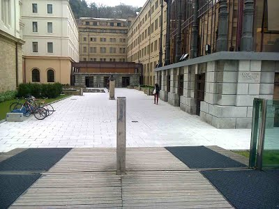
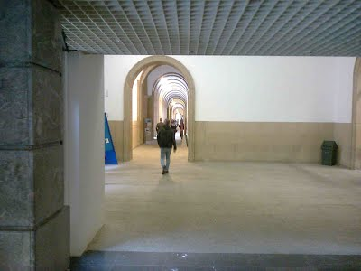
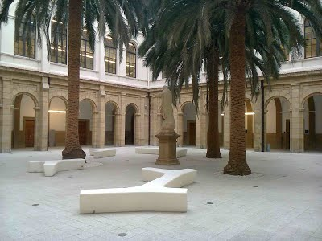
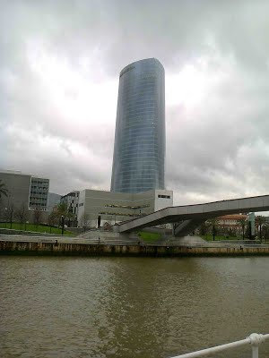
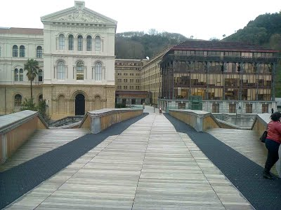

By train:
The central train station Abando is well located at the centre of the city, and conveniently linked to all the public transport options operating within
Bilbao (see below). Long distance lines arrive to Bilbao from Barcelona and Madrid and other main cities. Check the Abando and
RENFE web pages for information about lines and schedules. There is another train company, FEVE (official webpage in Spanish here),
which links Bilbao to all the cantabric coast line to the west, to Asturias. The FEVE station is, in fact, next to the Abando station.
By bus:
Several long distance (as well as local) busses arrive to Bilbao at the main bus station Termibus. See its wikipedia page here for further information. Termibus is perfectly connected to the Bilbao public transport net (see
below).
By plane:
Bilbao Airport is directly connected to some main European cities, such as Barcelona, Frankfurt, Lisbon, London, Madrid, Munich and Paris. Check either the official web page of Bilbao Airport or its
wikipedia webpage for details about flights, airlines and services.
To and from the airport:
Bilbao Airport is about 12 Km from Bilbao, and it is very well connected to the city: The journey takes around 15 minutes and costs about 18€. The bus line 3247 (operated by BizkaiBus) connects Bilbao centre–Moyúa square, with
Metro station–and the city bus station Termibus with the airport. In October, the bus runs every 30 minutes, from 5:25 am to 21:55 from Bilbao to the airport, and from 6:15 am to 24:00 from the airport to Bilbao. The journey
takes 15 minutes to Moyúa and 20 minutes to Termibus. A single ticket costs 1.30€.
Local transport:
Apart from the taxis, public transport in Bilbao is managed by
BilboBus city buses net, which covers all the Bilbao area and most of its surroundings
Metro (underground/tube/metro/u-bahn)
Euskotran, the tram, which links the area around Termibus with most of the amenities in Bilbao up to the old town.
Both the central train station Abando and the main bus station Termibus are connected to the three means of transport: underground, tram and bus.
How to get to the University of Deusto from the Hotel Barcelo Nervion
(i) Exit the hotel and turn right, start to walk on the riverside in the direction of the Guggenheim. Please do not cross the river.
(ii) Please go up on this staircase, and turn right
(iii) When approaching the entrance, you pass a statute, and then enter the University of Deusto
(iv) Turn left and go ahead in this corridor
(v) Go until you reach the second hall with palm trees.
This is the place for registration, posters and the coffee. The conference hall opens to this inner yard. The name of the conference hall is Sala Garate (Garate Hall).
How to get to the University of Deusto from the Guggenheim museum
(i) Please go to the bridge below and cross it:
(ii) Cross the bridge towards the University of Deusto building
(iii) When approaching the entrance, you pass a statute, and then enter the University of Deusto
(iv) Turn left and go ahead in this corridor
(v) Go until you reach the second hall with palm trees.
This is the place for registration, posters and the coffee. The conference hall opens to this inner yard. The name of the conference hall is Sala Garate (Garate Hall).